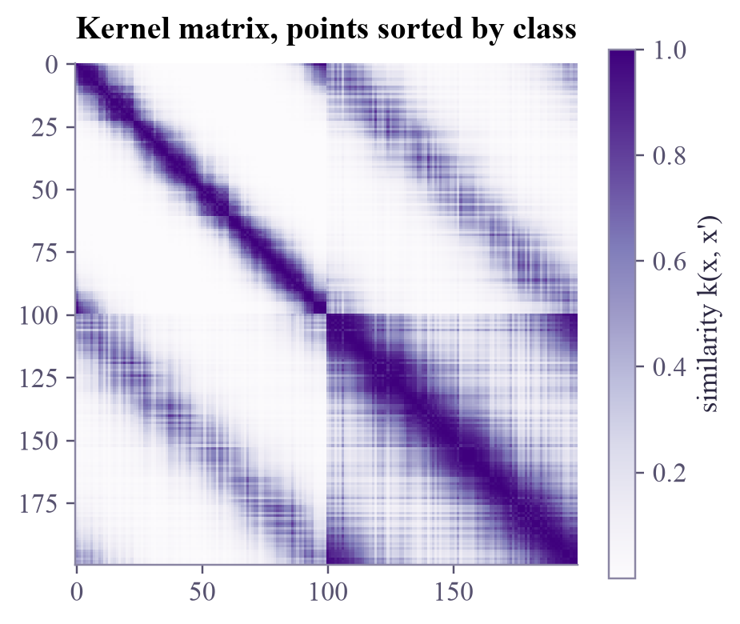
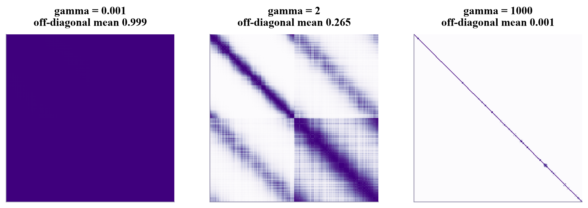

shape: (200, 200) symmetric? True diagonal all 1? True

An SVM never sees your data, only a table of similarities between every pair of points. Learn to read that table, and to hand one to an SVM yourself.

Imagine a table listing, for every pair of students in a class, how well they get along. Without knowing anything else about them, you could already spot the friend groups. That table is what an SVM actually works with. Today you'll learn to read it, because in quantum machine learning this is exactly the part a quantum computer provides.
For training points, the kernel matrix (or Gram matrix) collects every similarity:
Sort the points by class and a good kernel shows its quality at a glance: bright blocks on the diagonal (points of the same class look alike) and darker blocks off it. Two failures are just as visible:
Every pair looks similar: is nearly all ones. The SVM can't tell anything apart. (RBF with tiny .)
Every point only resembles itself: is nearly the identity. The SVM memorizes. (RBF with huge .)
Not every table is allowed: a real kernel is an inner product, which makes its matrix positive semidefinite (no negative eigenvalues).
To use a matrix you computed yourself, scikit-learn's SVC(kernel="precomputed") takes the train × train matrix for fitting, and for predicting a test × train matrix: each test point's similarity to every training point.
The kernel matrix is the whole interface between your data and the SVM. Whoever can compute it, classical code or a quantum circuit, can plug into the same algorithm.
Hover a cell of the matrix to see which two points it compares, or hover a point to see its row. Then sweep from one end to the other.
Find the with the best contrast between "same class" and "different class". Then push all the way up: only the diagonal survives. Remember this picture; you'll see it again in the Quantum ML tutorial, where it's a famous problem for quantum kernels.
ml-w4d4.ipynb. To change the code and run it yourself, open the notebook in Google Colab (free, in your browser) or download it for your own Jupyter.import numpy as np
import matplotlib.pyplot as plt
from sklearn.datasets import make_circles
from sklearn.metrics.pairwise import rbf_kernel
from sklearn.svm import SVC
Xc, yc = make_circles(n_samples=200, noise=0.08, factor=0.45, random_state=1)
order = np.lexsort((np.arctan2(Xc[:, 1], Xc[:, 0]), yc)) # by class, then by angle around the circle
X, y = Xc[order], yc[order]
K = rbf_kernel(X, gamma=2)
print("shape:", K.shape, " symmetric?", np.allclose(K, K.T), " diagonal all 1?", np.allclose(np.diag(K), 1))
plt.figure(figsize=(4.6, 3.9))
plt.imshow(K, cmap="Purples")
plt.colorbar(label="similarity k(x, x')")
plt.title("Kernel matrix, points sorted by class")
plt.grid(False)
plt.show()shape: (200, 200) symmetric? True diagonal all 1? True

fig, axes = plt.subplots(1, 3, figsize=(10, 3.3), layout="constrained")
for ax, gamma in zip(axes, [0.001, 2, 1000]):
Kg = rbf_kernel(X, gamma=gamma)
off = Kg[~np.eye(len(Kg), dtype=bool)].mean()
ax.imshow(Kg, cmap="Purples", vmin=0, vmax=1)
ax.set_title(f"gamma = {gamma}\noff-diagonal mean {off:.3f}")
ax.set_xticks([])
ax.set_yticks([])
plt.show()
from sklearn.metrics.pairwise import euclidean_distances
eig_rbf = np.linalg.eigvalsh(rbf_kernel(X, gamma=2))
eig_bad = np.linalg.eigvalsh(-euclidean_distances(X))
print(f"RBF kernel: smallest eigenvalue {eig_rbf.min():+.2e} (zero up to rounding)")
print(f"minus the distance: smallest eigenvalue {eig_bad.min():+.2f} (negative: not a kernel)")RBF kernel: smallest eigenvalue -1.21e-15 (zero up to rounding) minus the distance: smallest eigenvalue -205.50 (negative: not a kernel)
from sklearn.model_selection import train_test_split
X_tr, X_te, y_tr, y_te = train_test_split(Xc, yc, test_size=0.3, random_state=0)
K_train = rbf_kernel(X_tr, X_tr, gamma=2) # 140 x 140
K_test = rbf_kernel(X_te, X_tr, gamma=2) # 60 x 140
model = SVC(kernel="precomputed").fit(K_train, y_tr)
print("K_train", K_train.shape, " K_test", K_test.shape)
print("test accuracy with a precomputed kernel:", round(model.score(K_test, y_te), 3))K_train (140, 140) K_test (60, 140) test accuracy with a precomputed kernel: 1.0
Write rbf_matrix(A, B, gamma) with NumPy broadcasting, so that entry is . Check it against scikit-learn, then train and test a precomputed SVM with it.
def rbf_matrix(A, B, gamma):
return np.zeros((len(A), len(B))) # TODO: squared distances between every row of A and every row of B, then exp
print("matches scikit-learn?", np.allclose(rbf_matrix(X_tr, X_tr, 2), K_train))A[:, None, :] - B[None, :, :] has shape (len(A), len(B), 2): every difference at once. Square, sum over the last axis, multiply by -gamma, exponentiate.
def rbf_matrix(A, B, gamma):
sq = ((A[:, None, :] - B[None, :, :]) ** 2).sum(axis=-1) # shape (len(A), len(B))
return np.exp(-gamma * sq)
print("matches scikit-learn?", np.allclose(rbf_matrix(X_tr, X_tr, 2), K_train))
mine = SVC(kernel="precomputed").fit(rbf_matrix(X_tr, X_tr, 2), y_tr)
print("test accuracy:", round(mine.score(rbf_matrix(X_te, X_tr, 2), y_te), 3))matches scikit-learn? True test accuracy: 1.0
predict?SVC(kernel="precomputed") accepts any valid matrix you can compute.A quantum kernel method computes this matrix with a quantum computer, one overlap per entry, and hands it to the very same SVC(kernel="precomputed"). Its most famous difficulty is the "too narrow" picture: with many qubits, quantum kernel matrices often look like the identity. You'll meet it as exponential concentration.
Schölkopf and Smola's book Learning with Kernels (MIT Press, 2002) is the classic reference on kernel matrices and positive definite kernels.
Next in Machine Learning: Friday's project, a showdown of kernels, including one that a quantum computer would compute.

Tap the button to save it. Short and steady wins.
Marked by mistake? Undo